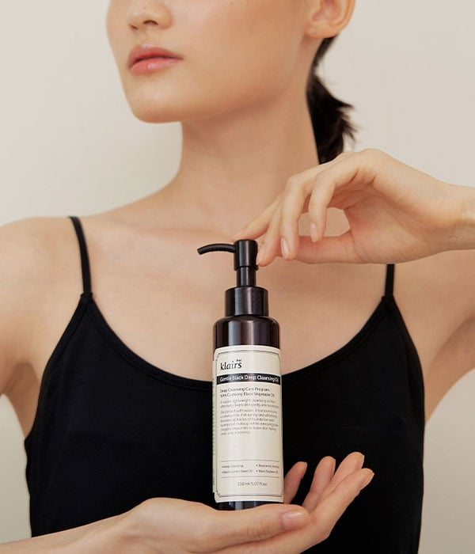
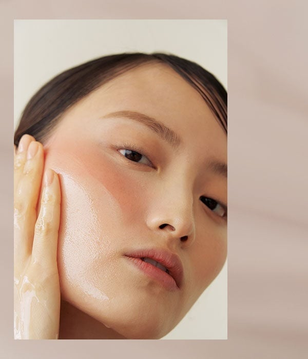
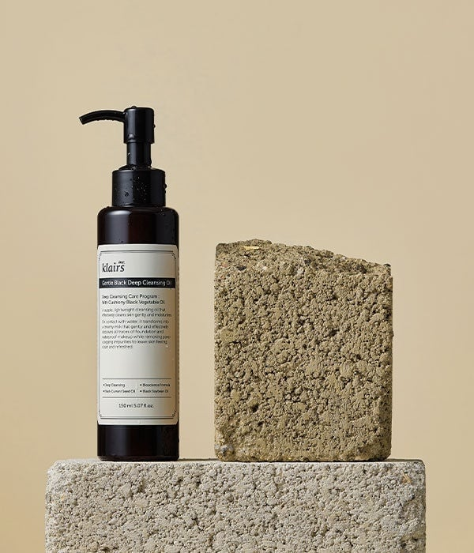
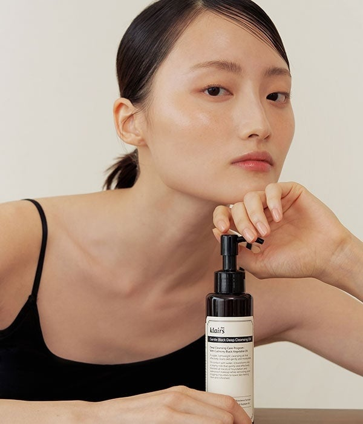
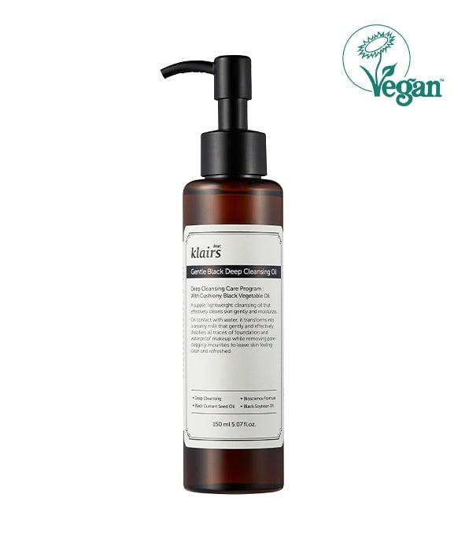

<div> <table style="border-collapse: collapse; width: 99.9251%;" border="1"><colgroup><col style="width: 50%;"><col style="width: 50%;"></colgroup> <tbody> <tr> <td> <div><span style="font-size: 14pt;"><strong>Dear, Klairs Gentle Black Ulei de curatare profunda</strong></span></div> <div><span style="font-size: 14pt;"><strong>150ml</strong></span></div> <div><span style="font-size: 14pt;">Descopera uleiul hidrofil Gentle Black Deep Cleansing Oil de la Dear, Klairs, prezentat elegant in rutina zilnica. Ambalajul sau cu pompita practica asigura o dozare igienica si controlata, oferind o experienta de curatare premium, ideala pentru indepartarea delicata a machiajului si mentinerea unui ten proaspat.</span></div> </td> <td></td> </tr> <tr> <td></td> <td><span style="font-size: 14pt;">Uleiul demachiant de la Dear, Klairs ofera o curatare profunda, dar extrem de blanda, lasand pielea hidratata si catifelata. Textura sa fina aluneca usor pe ten pentru a dizolva impuritatile si sebumul, fiind solutia ideala pentru a obtine un aspect luminos, neted si perfect curat.</span></td> </tr> <tr> <td><span style="font-size: 14pt;">O compozitie minimalista ce pune in valoare uleiul de curatare Dear, Klairs, alaturi de elemente texturate naturale. Aceasta prezentare reflecta puritatea formulei si angajamentul brandului pentru o ingrijire simpla si eficienta, fiind o alegere excelenta pentru integrarea ingredientelor vegetale in ritualul tau de curatare a tenului.</span></td> <td></td> </tr> <tr> <td></td> <td><span style="font-size: 14pt;">Bucura-te de un ten revigorat si echilibrat cu ajutorul uleiului hidrofil Dear, Klairs. Creat special pentru a respecta bariera naturala a pielii, acest produs transforma demarierea intr-un moment de rasfat confortabil, lasand o senzatie de prospetime si o piele curata, pregatita pentru urmatorii pasi de ingrijire.</span></td> </tr> <tr> <td><span style="font-size: 14pt;">Gentle Black Deep Cleansing Oil intr-un format generos de 150ml. Flaconul minimalist, marcat cu certificarea oficiala Vegan, subliniaza o formula etica si curata bazata pe uleiuri vegetale negre, ideala pentru o demachiere eficienta, fara a lasa vreo senzatie de piele incarcata.</span></td> <td></td> </tr> </tbody> </table> </div>